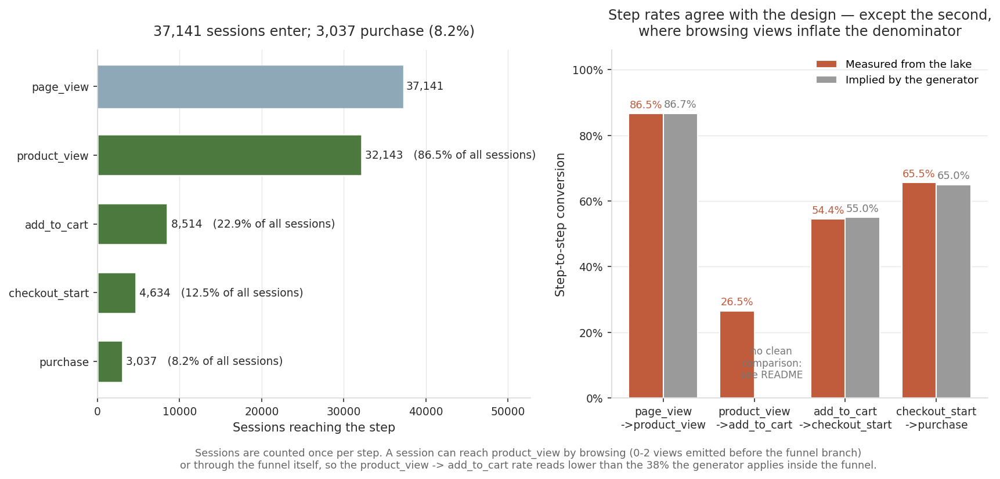
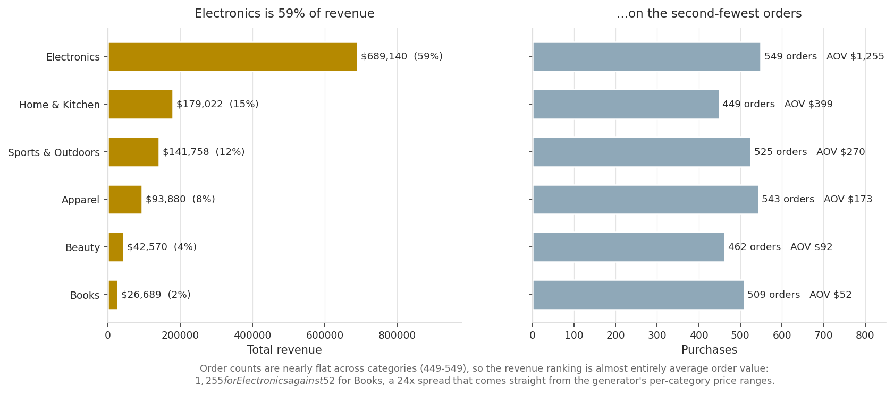
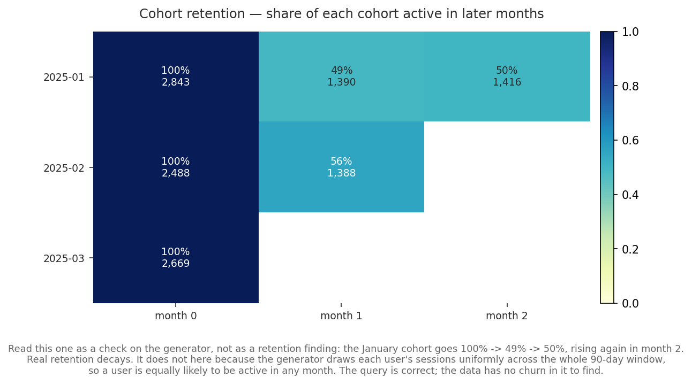

A modern data pipeline for ingesting and analyzing clickstream/e-commerce events at scale, built on a lakehouse of partitioned Parquet files: Polars for multithreaded ETL, PyArrow for columnar partitioning, and DuckDB as the embedded analytical SQL engine that queries the lake directly without loading it into RAM.
This page shows the project's results. The methodology, the design decisions and the limitations are documented in the repository's README.
`src/lakehouse/analytics.py`

#### The funnel measures something slightly different from what the generator configures

Revenue is concentrated: Electronics is 58.7% of the total on 549 purchases, the second-smallest order count. Purchases are nearly flat across the six categories (449–549), so the revenue ranking is almost entirely average order value — $1,255 for Electronics against $52 for Books, a 24x spread that comes straight from the generator's per-category price ranges.

The cohort query works and the three cohorts sum to exactly the 8,000 users generated. The *result*, though, is a check on the data rather than a finding: the January cohort goes 100% → 49% → 50%, rising in month 2. Real retention decays. It does not here because the generator draws each user's sessions uniformly across the whole 90-day window, so a user is equally likely to be active in any month. There is no churn in this data to find, and the honest thing is to say so rather than present a flat curve as a retention insight.